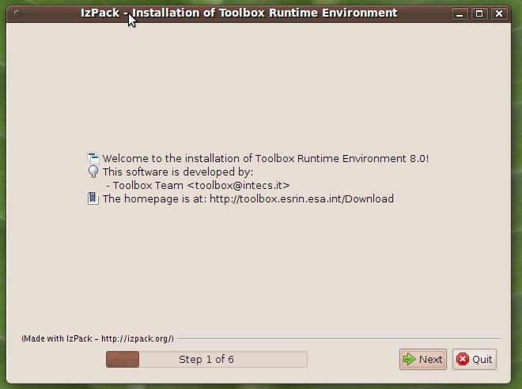
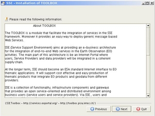
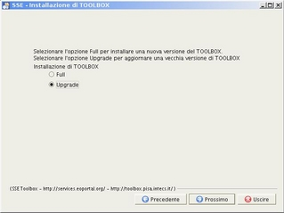
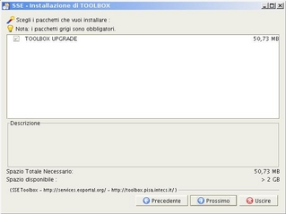
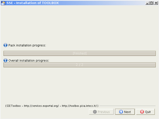
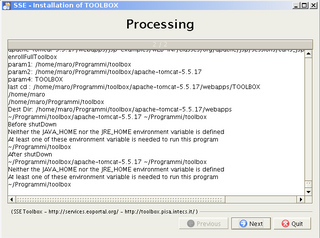

Upgrading the TOOLBOX
To upgrade the TOOLBOX follow these steps.
To install the TOOLBOX from on a TOMCAT already installed on the target machine follow these steps.
To install the TOOLBOX from scratch follow these steps. These steps are applicable both to the light installer as well as to the Full installer.
Windows: double-click on the [INSTALLER].jar file.
Linux: run ./setup.sh from a shell.
The language selection panel should appear.
Linux |
Windows |
|

Select the language and then click on Ok.

The welcome panel should appear. Click on Next

A panel describing the TOOLBOX should appear. Click on next

The license agreement page should appear. Select the "I accept the terms of the license agreement" option and click on Next

Select the Upgrade option and click on Next.

Select the absolute path to the Tomcat installation directory where the TOOLBOX is deployed and click on Next

Click on Next

A progress panel should appear. Wait few minutes then click on Next (when the button is enabled)
The TOOLBOX is now deployed

At the end of the installation the installer should display

Click on done. Tomcat is automatically started.